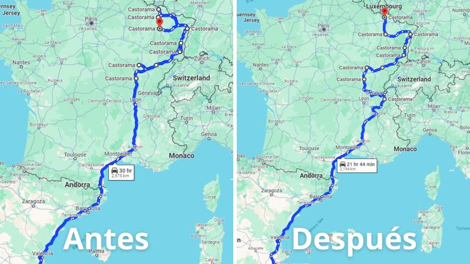
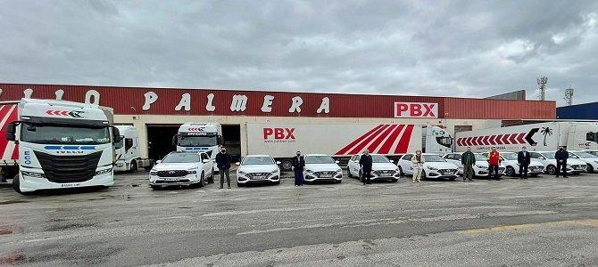

Experiencia
Administrativo Financiero - Prácticas
Campillo Palmera - Marzo 2024 - Junio 2024, Molina del Segura, Murcia
- Estandaricé documentación financiera mediante aplicaciones ERP, aumentando la eficiencia del equipo en un 35%.
- Identifiqué tendencias de gastos y transporte, creando pronósticos financieros y estrategias de gestión de riesgos.
- Desarrollé una base de datos de trabajadores, mejorando la eficiencia interdepartamental en un 17,5%.

Antes y Después
Comparación del proceso financiero antes y después de la optimización.

Tendencias de Transporte
Visualización de las tendencias de transporte que ayudaron a crear pronósticos financieros.
Analista de Operaciones de Comercio Internacional
Campillo Palmera - Full-time
Marzo 2024 - Junio 2024 · Molina de Segura, Murcia
- Optimicé procesos financieros con órdenes de carga y estandarización de documentación, aumentando la eficiencia en un 35%.
- Identifiqué tendencias de gastos y transporte, creando pronósticos financieros y estrategias de gestión de riesgos.